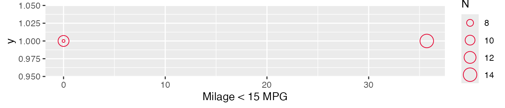

Using kpitools
kpitools.Rmdkpitools is intended to aid in creating reports on key performance indicators (KPIs). KPIs must be defined by the user, which can be a substantial undertaking, but kpitools then takes away some of the pain of putting them into a report.
kpitools is loaded as any other package, with the library or require functions:
library(kpitools)
#> Loading required package: dplyr
#>
#> Attaching package: 'dplyr'
#> The following objects are masked from 'package:stats':
#>
#> filter, lag
#> The following objects are masked from 'package:base':
#>
#> intersect, setdiff, setequal, union
#> Loading required package: ggplot2
#> Loading required package: magrittr
#> Loading required package: rlang
#>
#> Attaching package: 'rlang'
#> The following object is masked from 'package:magrittr':
#>
#> set_namesOnce the KPIs are defined, it should be clear what type of indicator one needs to report. For instance, using the mtcars dataset, we may have an indicator for low mileage (e.g. MPG less than 15). We’re not really interested in the individual cars, but at the group of products as a whole. If the proportion of cars with low mileage is higher than 20%, we may have to take actions to reduce the proportion.
to use kpitools, we must first load the data and create the indicators themselves (using whatever method for a given dataset).
data(mtcars)
mtcars$lowmpg <- mtcars$mpg < 15kpitools can then be used to get summary information on the defined KPIs. We tell the kpi function which dataset to use, which variable to summarize and how to summarize it, using the kpi_fn argument.
x <- (kpi(data = mtcars,
var = "lowmpg",
kpi_fn = kpi_fn_perc))
x
#> Study level:
#> txt n N stat
#> lowmpg 5 32 15.625We see that of the 32 cars, 5 (15.625%) cars have low mileage (according to our definition).
We can improve the output by adding a more meaningful label via the txt argument.
kpi(data = mtcars,
var = "lowmpg",
kpi_fn = kpi_fn_perc,
txt = "Milage < 15 MPG")
#> Study level:
#> txt n N stat
#> Milage < 15 MPG 5 32 15.625Hierarchies
We can also look at specific subgroups (e.g. in a clinical trial, we would be interested in the performance of particular countries or centers) via the by argument. Using the mtcars example, we can use the number of cylinders.
x_by <- (kpi(data = mtcars,
var = "lowmpg",
kpi_fn = kpi_fn_perc,
txt = "Milage < 15 MPG",
by = "cyl"))
x_by
#> Study level:
#> txt n N stat
#> Milage < 15 MPG 5 32 15.625
#>
#> Grouped by cyl:
#> txt cyl n N stat
#> Milage < 15 MPG 4 0 11 0.00000
#> Milage < 15 MPG 6 0 7 0.00000
#> Milage < 15 MPG 8 5 14 35.71429
#>
#> No outliersHere we can see that all of the low mileage cars are in the 8 cylinder group, with 35.7142857% of cars having low mileage.
We can also pass multiple variables to by (so that we can consider two levels or more levels of hierarchy simultaneously)
x_by <- (kpi(data = mtcars,
var = "lowmpg",
kpi_fn = kpi_fn_perc,
txt = "Milage < 15 MPG",
by = c("cyl", "am")))
x_by
#> Study level:
#> txt n N stat
#> Milage < 15 MPG 5 32 15.625
#>
#> Grouped by cyl:
#> txt cyl n N stat
#> Milage < 15 MPG 4 0 11 0.00000
#> Milage < 15 MPG 6 0 7 0.00000
#> Milage < 15 MPG 8 5 14 35.71429
#>
#> No outliers
#> Grouped by am:
#> txt am n N stat
#> Milage < 15 MPG 0 5 19 26.31579
#> Milage < 15 MPG 1 0 13 0.00000
#>
#> No outliersHere, we see that cars with manual gearboxes are more problematic than those with automatic gearboxes.
Plotting
Where hierarchies have been used, KPIs can also be visualized by plotting the object, which returns a list of ggplot2 objects (so that you can modify the plots afterwards; we suggest a wide, short plot, e.g. fig.width=7, fig.height=1.5 in the R chunk header).
(p <- plot(x_by))
#> $cyl
#>
#> $am
The size of the points is relative to the number of observations (participants) in the site/group.
kpitools contains a ggplot2 which can be used to remove the y-axis, move the legend and make various other changes:
p[[1]] + theme_kpitools()
Modifications can be made to all plots easily via e.g. lapply or purrr::map
p <- purrr::map2(p, names(p), function(x, y){
x + # extract the ggplot object
theme_kpitools() + # apply the theme
guides(size = guide_legend(nrow = 1)) + # make other modifications
ggtitle(toupper(y)) # add a title
})The patchwork package, for example, could then be used to arrange the plots
patchwork::wrap_plots(p, ncol = 1)